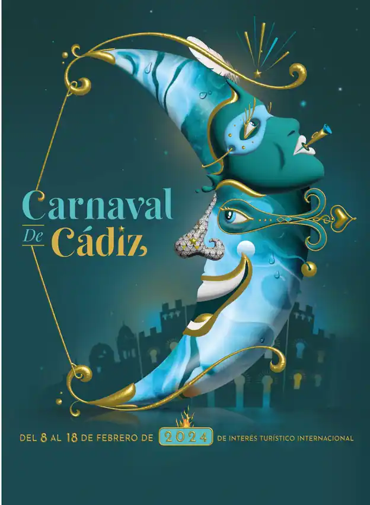
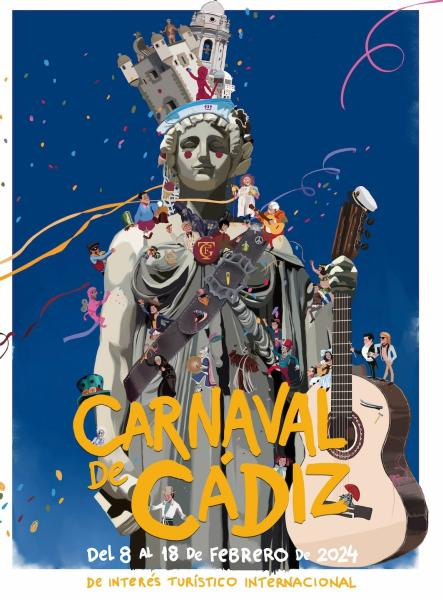
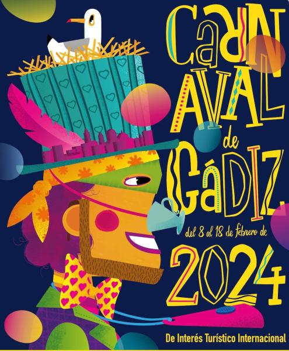
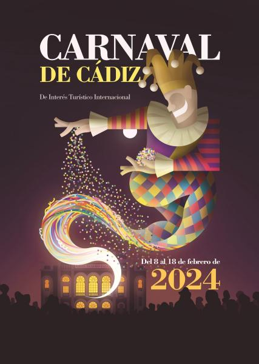

Hechizo de luna gaditana', de Carlos Ibáñez de Prado, ha sido elegido por votación popular



| Año | Comparsa | Chirigota | Coro | Cuarteto |
|---|---|---|---|---|
| 2023 | La ciudad invisible (M. Ares) | Amoscuchá: chirigota callejera (Melli y Molina) | Los Martínez (Pardo y Rivas) | Escuela taller de gladiadores El Pópulo (Moreno, Cossi y Gago) |
| 2022 | Los sumisos (M. Ares) | La misión: el Evangelio según Santander (M. Santander / C. Pérez / Sánchez Reyes) | Pachamama (Bayón y Cao) | Los ultraortodoxos de los callejones Cardoso (Gago) |
| 2021 | En agosto de 2020 se anuncia la cancelación del COAC 2021, así como del resto de actos del Carnaval de Cádiz de 2021 debido a la pandemia del COVID-19. | |||
| 2020 | Oh capitán, my capitán! (Tino Tovar) | Los Cádizfornia (V.Luque) | La Colonial (J.M Pedrosa/ D.Fernández) | El cuarteto del More (I. Romero) |
| 2019 | Los Carnívales (M. Ares) | La maldición de la lapa negra (M. Santander) | Los del patio (J.M Pedrosa/D.Fernández) | Brigada amarilla (agüita con nojotros) (Morera) |